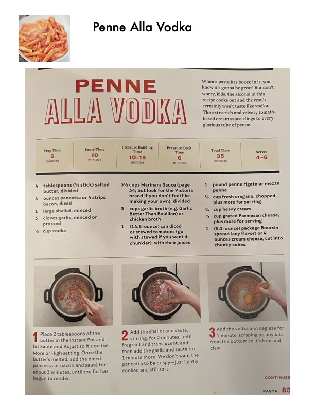

Penne Alla Vodka (Pressure Cooker)

Original cookbook page 244
When a pasta has booze in it, you know it's gonna be great! The extra-rich and velvety tomato-based cream sauce clings to every glorious tube of penne. The alcohol cooks out during preparation.
Prep: 5 minutes • Cook: 30 minutes • Total: 35 minutes
Ingredients
- 4 tablespoons (½ stick) salted butter, divided
- 4 ounces pancetta or 4 strips bacon, diced
- 1 large shallot, minced
- 3 cloves garlic, minced or pressed
- ½ cup vodka
- 3½ cups Marinara Sauce, divided
- 3 cups garlic broth or chicken broth
- 1 (14.5-ounce) can diced or stewed tomatoes, with their juices
- 1 pound penne rigate or mezze penne
- ½ cup fresh oregano, chopped, plus more for serving
- ¾ cup heavy cream
- ¾ cup grated Parmesan cheese, plus more for serving
- 1 (5.2-ounce) package Boursin spread (any flavor) or 4 ounces cream cheese, cut into chunky cubes
Instructions
- Place 2 tablespoons of the butter in the Instant Pot and hit Sauté and Adjust so it's on the More or High setting. Once the butter's melted, add the diced pancetta or bacon and sauté for about 3 minutes, until the fat has begun to render.
- Add the shallot and sauté, stirring, for 2 minutes, until fragrant and translucent, and then add the garlic and sauté for 1 minute more. We don't want the pancetta to be crispy—just lightly cooked and still soft.
- Add the vodka and deglaze for 1 minute, scraping up any bits from the bottom so it's free and clear.
- Add 1½ cups of the marinara sauce, the broth, tomatoes, and remaining 2 tablespoons of butter and mix well. The butter doesn't need to be fully melted.
- Lay the pasta on top but do not stir. Just smooth it out with a mixing spoon so it's mostly submerged in the liquid (it's okay if some sticks up).
- Secure the lid, move the valve to the sealing position, hit Keep Warm/Cancel, then hit Manual or Pressure Cook on High Pressure for 6 minutes. Quick release when done.
- Stir in the remaining 2 cups of marinara sauce, the oregano, heavy cream, Parmesan, and Boursin or cream cheese, stirring occasionally until everything has melded, about 2 minutes.
- Serve topped with fresh Parmesan and an additional sprinkle of fresh oregano.
📝 Recipe Notes
Vodka is optional — it just helps bring out the flavor of the tomato sauce and can be omitted. Optional protein: Feel free to add crumbled sausage, ground beef, ground turkey, or ground chicken during Step 1. But no more than ½ pound, as the pot will be pretty packed as is. Recipe spans pages 244-245.
Recipe #244 from collection